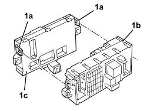

5505A32 BODY COMPUTER - R.R
- Path
- Procedures > 55 ELECTRICAL EQUIPMENT > 5505 INSTRUMENT/GAUGE ELECTRICAL CIRCUITS > 5505A MULTI-FUNCTION COMPONENTS > 5505A32 BODY COMPUTER - R.R
- Kind
- repair procedure (removal / refitting; the operation number is the code)
- Applies to
- all engines; all production periods
- Interactive page
- https://sloeber94.github.io/elrnDB-aBrrSpdr/en/#/946002331
Applies to: all engines; all production periods
 Removing
Removing
 Refitting
RefittingOp. 7040A37 FUSE BOX COVER IN INSTRUMENT PANEL - R.R
1. Release the retainers (1a) and separate the junction unit (1b) from the body computer (1c).

Applies to: all engines; all production periods
Refitting
RemovingCheck that the body computer is not damaged.
At the bench, connect the junction unit to the body computer and attach the retainers.
If the body computer is being replaced, proceed as follows.
If the same body computer that was removed is being refitted on the vehicle, use the Examiner to check that the system has not picked up errors during the operation.
Op. 7040A37 FUSE BOX COVER IN INSTRUMENT PANEL - R.R
Test the operation of the electrical system.
Topics linked from this page (1)
Topics that link to this page (65)
- A005 ALARM LED NOT WORKING
- A006 ALARM LIGHT FLASHING NOT WORKING
- A010 ALARM CENTRAL LOCKING NOT WORKING
- A015 ALARM SOUNDS FOR NO REASON
- A020 ALARM SIREN NOT WORKING
- A025 ALARM VOLUMETRIC SURVEILLANCE NOT WORKING
- A030 ALARM NOT WORKING LUGGAGE COMPARTMENT UNLOCKED
- A031 ALARM DOES NOT COME ON WHEN LUGGAGE COMPARTMENT IS CLOSED
- A032 ALARM DOES NOT GO OFF WITH BOOT RELEASE
- A033 ALARM ACTIVATION ACOUSTIC SIGNAL IRREGULAR
- A035 TILT SENSOR ALARM NOT WORKING
- G010 NO ACOUSTIC WARNING FOR HANDBRAKE APPLIED WITH VEHICLE MOVING
- I001 SIDE LIGHTS/NO. PLATE LIGHTS NOT WORKING
- I002 PARKING LIGHTS NOT WORKING
- I003 NUMBER PLATE LIGHTS NOT WORKING
- I004 SIDE LIGHTS / NUMBER PLATE LIGHT AND DIPPED BEAMS DO NOT WORK IN AUTO MODE
- I006 MAIN BEAM HEADLAMPS NOT WORKING
- I008 SIDE LIGHTS NOT WORKING
- I010 DIRECTION INDICATORS / HAZARD WARNING LIGHTS NOT WORKING
- I014 BRAKE LIGHTS AND THIRD BRAKE LIGHT NOT WORKING
- I017 REVERSING LIGHTS NOT WORKING
- I020 FOG LIGHTS NOT WORKING
- I021 REAR FOG LAMPS NOT WORKING
- I039 DIRECTION INDICATORS NOT WORKING WHEN HAZARD WARNING LIGHT SWITCH IS PRESSED
- K009 DOORS OPEN CHECK WARNING LIGHT/SYMBOL ON
- K021 FUEL RESERVE WARNING LIGHT NOT WORKING
- K025 ENGINE COOLANT TEMPERATURE GAUGE NOT WORKING
- K026 ENGINE COOLANT OVERHEATING WARNING LIGHT NOT WORKING
- K033 DOORS OPEN CHECK WARNING LIGHT ON
- K034 LIGHTS CHECK WARNING LIGHT OFF (INITIAL TEST NOT CARRIED OUT)
- K043 DISPLAY DOES NOT SHOW AVERAGE CONSUMPTION ON TRIP MODULE
- K051 MIL WARNING LIGHT AND WARNING LIGHT/SYMBOL FOR VEHICLE PROTECTION SYSTEM BOTH ON (ENGINE DOES NOT START)
- K060 ABS FAILURE WARNING LIGHT ON
- K062 ABS AND HANDBRAKE WARNING LIGHTS BOTH ON
- K066 HANDBRAKE WARNING LIGHT DOES NOT COME ON (WITH HANDBRAKE APPLIED)
- K068 ESP WARNING LIGHT ON
- K069 PARKING BRAKE FAILURE WARNING LIGHT ON
- K080 AIR BAG FAILURE WARNING LIGHT ON
- K082 PASSENGER AIR BAG DISABLED WARNING LIGHT ON
- K090 INSTRUMENT LIGHTS NOT WORKING
- K091 INSTRUMENT LIGHTS DIMMER NOT WORKING
- K095 INSTRUMENT PANEL NOT WORKING
- K123 WATER IN DIESEL FILTER WARNING LIGHT ON CONSTANTLY
- K125 DISPLAY DOES NOT SHOW RANGE ON TRIP MODULE
- K126 DISPLAY DOES NOT SHOW AVERAGE SPEED ON TRIP MODULE
- K127 DISPLAY DOES NOT SHOW JOURNEY TIME ON TRIP MODULE
- K140 FUEL RESERVE WARNING LIGHT ON (WITH HIGHER LEVEL)
- K142 RECHARGING WARNING LIGHT ON
- K144 ONE WARNING LIGHT ACTIVATED BY STEERING COLUMN SWITCH UNIT ON CONSTANTLY
- K146 ONE WARNING LIGHT OPERATED BY CONTROL PANEL ON CONSTANTLY
- K160 ENGINE OIL TEMPERATURE WARNING LIGHT NOT WORKING
- K164 TEG LOCK WARNING LIGHT NOT WORKING
- M004 FRONT ELECTRIC WINDOWS NOT WORKING / WITH ENGINE SWITCHED OFF
- P001 FRONT DOOR CLOSING DEFECTIVE
- P010 CENTRAL LOCKING NOT WORKING
- P011 CENTRAL LOCKING / NOT WORKING WITH REMOTE CONTROL
- P014 BOOT OPENING/CLOSING NOT WORKING
- P015 LUGGAGE COMPARTMENT DOES NOT OPEN WITH REMOTE CONTROL
- P018 FUEL FLAP OPENING NOT WORKING
- P030 NO DOORS / BOOT OPEN BUZZER SIGNAL WITH CAR IN MOTION
- 5540BA DIPPED BEAM CIRCUIT CHECK
- 5540BA DIPPED BEAM CIRCUIT CHECK
- 5540BN SPEED SIGNAL CHECK
- 5540BN SPEED SIGNAL CHECK
- 5505A35 MAIN BODY COMPUTER/JUNCTION UNIT - R.R.